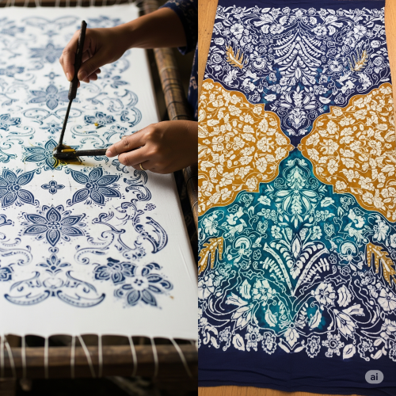
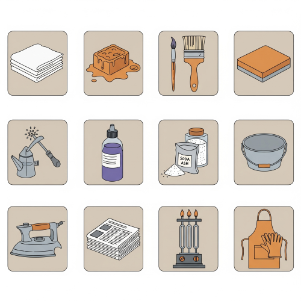

BATIK WORK
Meaning of Batik Work
Batik is a method of decorating fabric by applying wax to certain parts of the cloth before dyeing it. The wax prevents the dye from entering those areas, and when the wax is removed, it leaves behind beautiful patterns.

In simple words, Batik is a method of creating designs on cloth using wax and dye. The parts covered with wax do not absorb dye, so they remain the original colour of the fabric, while the rest of the cloth takes the dye colour.
Origin of Batik
Batik originated in Indonesia , where it is still widely practiced. Over time, it spread to many parts of the world including Africa. In Nigeria, a similar method known as Adire is practiced especially by the Yoruba people of the South-West.
Meaning of Some Important Words
- Wax – A thick, soft material that melts when heated. In batik, it is used to draw patterns.
- Dye – A coloured liquid used to change the colour of the fabric.
- Fabric – This is the cloth used for the batik work. Cotton is the best fabric for batik.
- Resist – To stop or prevent something. In batik, wax resists the dye.
Materials and Tools Needed for Batik
These are the things needed to do batik work:

- White cotton fabric - It can be calico or any white cotton cloth.
- Wax - This is made by mixing paraffin wax and candle wax.
- Brush - It is used to apply wax on the cloth.
- Foam or wooden blocks - These are carved to form shapes that can be stamped on the cloth.
- Tjanting tool - This is used to draw fine lines with wax (optional).
- Dye - This is used to colour the fabric.
- Salt or soda ash - These are fixing agents for the dye.
- Bowl or bucket - To mix dye or soak fabric.
- Iron or boiling water - To remove wax after dyeing.
- Newspaper or brown paper – To remove melted wax during ironing.
- Stove or heater – To melt the wax.
- Apron and gloves – To protect your body.
Techniques of Batik Work
There are different ways to do batik work. These are called techniques. Each technique gives a different result. The techniques are:
- Brush Technique – Wax is applied on the cloth using a brush.
- Block Technique – A carved foam or wood is dipped in wax and stamped on the cloth.
- Tjanting Technique – A special tool called tjanting is used to draw lines and dots.
- Stencil Technique – A stencil is used to trace shapes, and then wax is applied.
- Crackling Technique – After waxing, the cloth is folded or squeezed before dyeing to make crack lines.
- Splash Technique – Wax is splashed or dropped on the fabric to make random designs.
Process of Batik Work
Batik work is done step by step. The steps are:
- Wash and Iron the Fabric : The cloth should be clean and smooth.
- Draw the Design : Use pencil or chalk to sketch your design lightly on the cloth.
- Apply Wax : Use brush, block, or tjanting to put wax on the parts you don’t want to be dyed.
- First Dyeing: Put the fabric in a bowl of dye. The unwaxed parts will absorb the colour.
- Dry the Cloth: Take out the fabric and dry it in the sun.
- Add More Wax (Optional): If you want to use another colour, cover the parts you want to keep with more wax.
- Second Dyeing: Put in a second dye colour that is darker than the first one.
- Remove the Wax: Place the cloth between two newspapers and iron it. The wax will melt and come out.Or boil the cloth in water to remove the wax.
- Final Rinsing and Drying: Wash and dry the cloth again. Now the design will appear clearly.
Designs Used in Batik Work
- Geometric designs – lines, triangles, circles, squares, etc.
- Natural designs – leaves, flowers, birds, fishes.
- Abstract designs – shapes that are not real objects.
- Cultural symbols – African patterns and signs.
Uses of Batik Work
- Batik cloth can be used for making Shirts and dresses.
- Batik cloth can be used for making Wrappers and scarves.
- Batik cloth can be used for making Tablecloths and cushion covers.
- Batik cloth can be used for making Wall decoration.
- Batik cloth can be used for making Bags and other crafts.
Simple Batik Projects Pupils Can Do
Project 1: One-Colour Batik
- Use a small white cloth.
- Apply wax with a brush.
- Dye it with just one colour.
- Remove wax and dry.
Project 2: Block Batik
- Use foam or sponge to create simple shapes.
- Dip into hot wax and stamp on cloth.
- Use dye, remove wax, and dry.
Project 3: Group Project
- Design a banner as a group.
- Each pupil makes one part.
- Join all the pieces to form one big batik work.
Importance of Batik Work
- It teaches creativity.
- It shows the beauty of African culture.
- It can be used to make money.
- It helps students learn patience and neatness.
- It is useful for fashion and home decoration.
Problems That May Occur in Batik Work
- The wax may spill or burn.
- The dye may not enter well.
- The wax may be hard to remove.
- The fabric may tear if not handled carefully.
- Colour may mix wrongly if not done correctly.
Safety Rules in Batik Work
- Be careful when using hot wax.
- Do not touch wax with bare hands.
- Use apron and gloves.
- Work in a well-ventilated room.
- Follow your teacher’s instructions.
Evaluation Questions
- What is batik work?
- List five materials used in batik work.
- Mention three techniques of batik.
- State four uses of batik.
- What are three problems in batik work?
- Mention four safety rules during batik work.